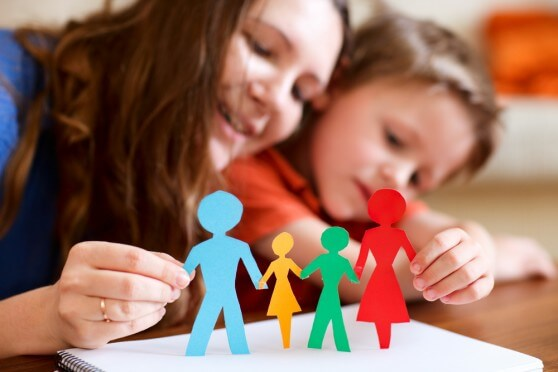

Hoy en día en la educación parental en las familias intenta cada vez más por buscar maneras diferentes de criar a sus hijos y dejar de lado los métodos punitivos tradicionales más autoritarios. Por eso, es posible generar una metodología del respeto mutuo y disciplina positiva. A continuación te explicamos ¿Qué es la disciplina positiva?.
Consiste promover en una educación basada en e respeto hacia el otro, basada en el amor, en la comprensión, y en la utilización del error como una oportunidad de aprendizaje y no en la ira, no en el chantaje, no en las relaciones verticales que sólo generan malestar y luchas de poder entre padres e hijos.
Cuál es la relación con el estilo democrático, esta educación democrática está basada en la aplicación del principio fundamental de la amabilidad y la firmeza al mismo tiempo. Amabilidad como respeto hacia el niño, la niña o el adolescente, firmeza como respeto hacia mí mismo como adulto y hacia la situación. Con ambas cosas en equilibrio podemos llevar a cabo una educación que sea respetuosa para todos, y enseñe lo más importante a los hijos, habilidades de vida.
